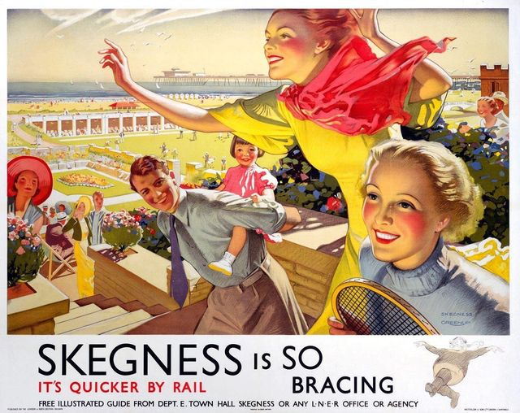
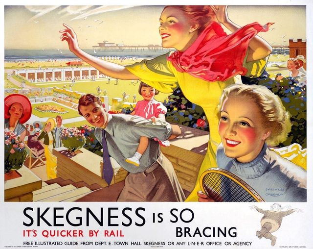

I'm Paul Collins
Leadership and Technology Consultant Based in Sunny Skegness.


A very warm welcome to Paul's Website.
I have many years experience of building computers and electronic equipment as a hobby and have just completed my first professional web design course. I enjoyed it a great deal and hope to do more in the future. I am also hoping to find some local organisations to design and upload websites for, by doing this I want to build up a portfolio of websites that will enable me to hone my skills and find further projects. I am a licensed Radio Amateur and member of the Radio Society of Great Britain.

For 30 years I worked in senior management in education management, this included managing large numbers of staff and multi-million pound budgets. I have been heavily involved in staff motivation and training through my working life and was at one point an Investors in People Adviser and Assessor, as well as doing project work on secondment with the TUC. In later years I had an important role in international recruitment, this meant I gained a lot of experience working abroad.